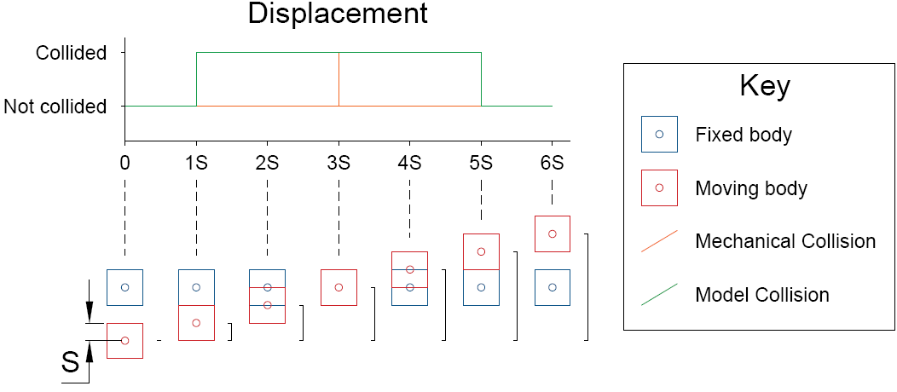
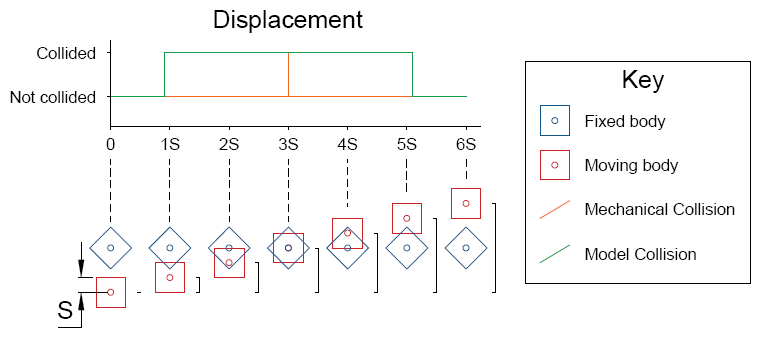
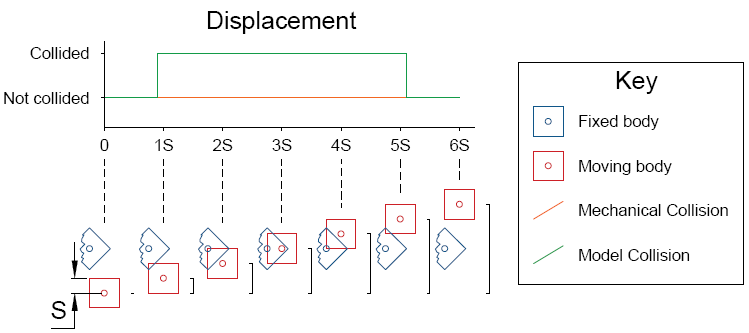
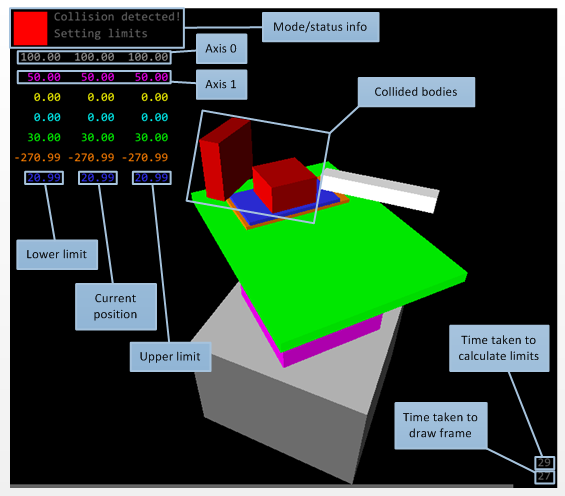

Collision Detection
Note
The collision avoidance monitor was removed in this PR.
This project aims to develop a system for detecting collisions within the LARMOR instrument at STFC’s ISIS facility, using the IBEX control system.
Original Behaviour
Presently, experiments are executed using Genie Python scripts, which command the various axes of motion, as well as the DAE system and other instrument systems. Care must be taken to ensure that the motion axes are not allowed to collide with each other, or other parts of the instrument. This means that “soft” limits must be placed on each axis of motion, based on the equipment present on the instrument and determined by the instrument scientist.
There are certain instrument configurations and situations where setting these “soft” limits does not allow the full range of motion required, or where the limits on multiple axes become interdependent. In this case, it would be useful to re-calculate the “soft” limits dynamically, in order to improve equipment safety whilst also giving the scientists greater freedom.
Proposed System
This project aims to produce a system capable of:
Developing a method for describing the geometry & motion of an instrument
Detecting collisions which have occurred, and stopping motion
Dynamically calculating the range of motion for each axis of motion and updating the “soft” limits for each axis
Detecting a collision that is likely to occur in the future, due to moving multiple axes
The system must appear transparent to the instrument users, and to this end, should require minimal changes to experiment scripts.
The system will be prototyped using python, which is already used extensively as part of IBEX.
The system resides within the EPICS-inst_servers repository. Start/stop scripts are in the root, with the code under CollisionDetection.
Prerequisites
This project assumes a development environment with a configured IBEX installation.
The system has been developed in PyCharm. For development purposes, the environment variables from the standard EPICS config_env.bat and from start_collision_detection_cmd.bat should be set in the PyCharm run configuration, with the script target set to main.py.
The system interfaces with the IBEX server using EPICS via the Channel Access protocol. Genie python is used for simple setting and getting of PVs, and the python ca module is used to monitor changes in PVs.
For collision detection, the system uses the Open Dynamics Engine, through the python module pyode. A wheel for which is located at https://www.lfd.uci.edu/~gohlke/pythonlibs/#ode
The system also produces a visual rendering of the system, for diagnostic and development purposes. This uses pygame and the pyopengl bindings, and needs glut.dll and glut32.dll, which are included in the repository and can be found here.
Instrument configurations
ZOOM
ZOOM is running the system to detect collisions on its detector and trolley axes (MTR0501, MTR0507). These move linearly along the same axis. The measurements were provided by Dominic Oram and are shown in the schematic in ticket 2936.
The system was deployed here in May 2018 with the intention of reducing the number of times the bump strips are triggered by the two components getting too close. Resetting the bump strips requires a manual reset, so catching it with the system beforehand reduces work for the instrument scientists. Motion control have stated that no damage will result from the system not stopping the motors.
SANS2D Tank
The system was reanalysed for the SANS2D tank (https://github.com/ISISComputingGroup/IBEX/issues/4587). The following issues were found that made it unsuitable for an immediate solution:
By moving two objects towards each other you can get just within the above limits before it comes to a stop, when inside these limits the CAM will halt all motion and not let you move the items apart again. Ticket
When automatically setting limits the CAM is not intelligent enough to realise that an object is currently moving out of the way, this could be avoided by just not using automatically set limits
System Overview
The system comprises four main parts:
Collision detector
Limit calculator
PV server
Graphic visualiser
Additionally the instrument geometry configuration must be described, and is loaded in from config.py.
A Note on Dial vs User Coordinates
The system uses the dial versions of the readback and limit PVs (DVAL, DRBV, DHLM, DLLM) to protect the collision detection algorithm from changes in the user coordinate system. See EPICS Motor Record.
Collision Detector
The collision detector is responsible for stopping motion if a collision occurs. The collision detector must be executed frequently, to stop collisions as promptly as possible. The collision detector runs in a separate thread, to allow it to operate independently to the main program, and provides a CollisionDetector.collisions list for interfacing with the rest of the program.
The system uses the Open Dynamics Engine (ODE) to calculate whether any bodies have collided, using the function collide. A list of GeomBox objects are created, one for each body, each containing an ode.GeomBox object. The ode.Collide function is used to determine whether each pair of geometries has collided. The config.ignore list ensures that only the geometries of interest are analysed, reducing the computational load.
When a collision is detected, the system sends a .STOP message to each motor that is currently moving, using Genie python.
Limit Calculator
The system dynamically calculates limits by stepping each motor through its range of motion, and checking for collisions, using the auto_seek_limits function. This can be approached as a sequential search, where collide is evaluated at each step along the range of motion. Each direction is searched first with a coarse step, then with a fine step.
This works on the assumption that most collisions behave like a rectangular function, and remain collided for a significant portion of movement. Typically this is true for linear motion, but when objects are inclined or in rotary cases the duration of the rectangle function is short. This means that for any step size, the search is not guaranteed to find collision.
If the geometries of the computer model are sufficiently larger than the real-world system, the search step can be optimised.
For a given increase in size S applied to each face of the box:
modelled size = actual size + 2S
Assuming a head on collision and considering only linear movement of the seeking axis, a collision of the real world system occurs once the model has collided by at least 2S. Furthermore, taking two objects with an actual size of zero, and a modelled size of 2S, a “head-on” collision is maintained for 4S.

In the case of an inclined collision, the collision will persist for longer as the collision path through the centre of the object increases with angle.

In the case of a glancing collision, whereby the collision of the model does not infer a collision of the real world system, a collision of the model may or may not be detected, but the real-world system will never be at risk.
Therefore any search step of 4S or less will detect a real-world collision.

For movements which involve rotation however, the search step must be chosen to ensure that no point on the body moves by more than 4S in any direction. To achieve this, the system calculates the positions of each vertex of the body at each step. The magnitude of the move is calculated, and if greater than 4S, the search step can be reduced. The magnitude of the move is re-calculated and the step reduced until the step is less than or equal to 4S.
Once an appropriate step size has been found, the magnitude of the move need not be calculated further, reducing the computational load. This assumes that the movement of any body can be expressed as a linear function of the seeking axis - each subsequent step in the seeking process produces a movement of magnitude equal to the first step.
###PV Server
The system exposes some PVs for controlling operation, and getting feedback for the user through pv_server.py. The pcaspy module is used to achieve this, similarly to the BlockServer.
There is no access security in the EPICS sense. However, writing to read only PVs is ignored by the driver.
PV Name |
Access |
Description |
|---|---|---|
|
R/W |
Automatically send new limits to all motors whenever new dynamic limits are calculated. If 0, the limits from |
|
R/W |
Automatically issue a |
|
W |
Writing any number to this PV will cause the dynamic limits to be recalculated. |
|
R/W |
The initial coarse step used when seeking limits. |
|
R |
A list of values for each body. Value will be 1 is a collision has been detected on that body. |
|
R/W |
The fine step used when seeking limits. Writing to this PV will cause the dynamic limits to be recalculated. |
|
R |
A list of the upper dynamic limits for each motor axis. |
|
R |
A list of the lower dynamic limits for each motor axis. |
|
R/W |
A 3-bit binary number of the operating mode (see |
|
R |
A human readable message describing the current collision status. This could be added to the spangle banner. Typical messages include |
|
R |
A list of the names read from |
|
R/W |
The additional distance added to the faces of each bodies, to make collisions easier to detect. |
|
R |
A random number for testing that the server is responsive |
|
R |
Value is 0 if any collisions have occurred, otherwise 1. |
|
R |
The time taken to calculate the last set of dynamic limits |
|
R |
A list of the distance from the current position to the upper limit for each motor axis. |
|
R |
A list of the distance from the current position to the lower limit for each motor axis. Should always be a negative number. |
|
R |
A list of the distance to the closest dynamic limit for each motor axis. If the axis is at either of its limits, this will be 0. |
Graphic Visualiser
The visualiser is started with the main program, and can be found in render.py.
The visualiser runs in its own thread, and iterates every 50 ms to draw each frame. It updates the graphic by monitoring the .DRBV PVs of each axis, and through a RenderParams object containing the soft limits, the collision status, and the duration of the most recent limit calculation.

Keyboard Controls
The program can be controlled through the visualisation window in the same way as setting the MODE PV.
Key |
Function |
|---|---|
1 |
|
2 |
|
3 |
|
4 |
|
The camera can also be re-positioned within the visualisation:
Key |
Function |
|---|---|
W |
Forward |
A |
Strafe left |
S |
Backward |
D |
Strafe right |
Q |
Down |
E |
Up |
Z |
Rotate clockwise |
X |
Rotate anti-clockwise |
Up |
Pan up |
Down |
Pan down |
Left |
Pan left |
Right |
Pan right |
Space |
Reset to initial view |
Describing Instrument Geometry
The geometry of the instrument is described in config.py. Generally the content of this file is a set of parameter lists, indexed against either the bodies in the mechanical system, or the motion axes. The various parameters are:
Parameter |
Indexed on |
Description |
|---|---|---|
|
Axis |
A list of RGB tuples used when drawing the limits and current position of each axis, where |
|
Body |
A list of |
|
Body |
A list of functions which take a list of position values, and return a |
|
Axis |
A list of motor PVs for each axis. The order of these PVs is the order of the position values given to |
|
Axis |
The end limits of each axis of motion. Nominally the end of travel, though tighter limits can be imposed. The dynamically calculated limits are always within these values. |
|
N/A |
A list of |
|
N/A |
The initial coarse limit seek step, which can be overridden by PV. |
|
N/A |
The initial fine limit seek step, which can be overridden by PV (but probably never needs to change from 0.5). |
|
N/A |
The initial oversize parameter to apply to the bodies, which can be overridden by PV. The relationship |
Suggested enhancements
Originally taken from https://github.com/ISISComputingGroup/IBEX/issues/2040
[ ] Change the
config.ignorelist to a “collisions of interest” list to make it shorter and easier to write out - but the default would be to ignore that body completely ifconfig.pywas wrong[x] Add some diagrams to the “Limit Calculator” section of the Wiki page.
[ ] Find out if the
TRAVELPV will ever be useful to anyone.[ ] Make the collision detection thread talk to the visualiser thread for updating the collision status of bodies (making them turn red more promptly).
[ ] Remove
config.oversize, and calculate the correct value for oversize inmain.py.[ ] Remove
config.control_pvas it shouldn’t need to change based on the instrument’s configuration (see *).[ ] * Make the program aware of its current instrument context - load the current PV from the environment variables at startup, and work out the full motor/control PVs appropriately.
[ ] Load the configuration from an appropriate location based on the instrument configuration (ask the BlockServer)
[ ] Calculate the oversize of the models based on the stopping distances of the motors in the system